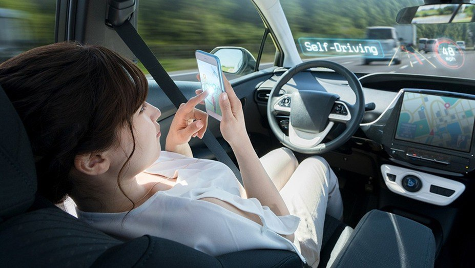
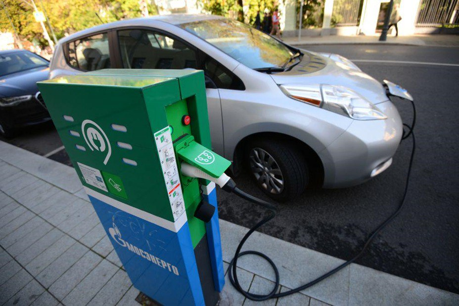
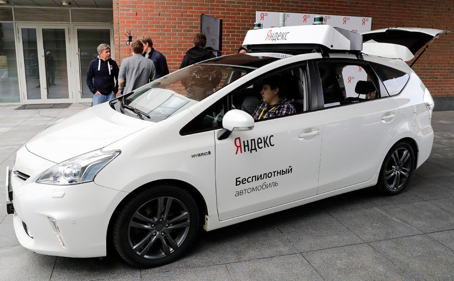
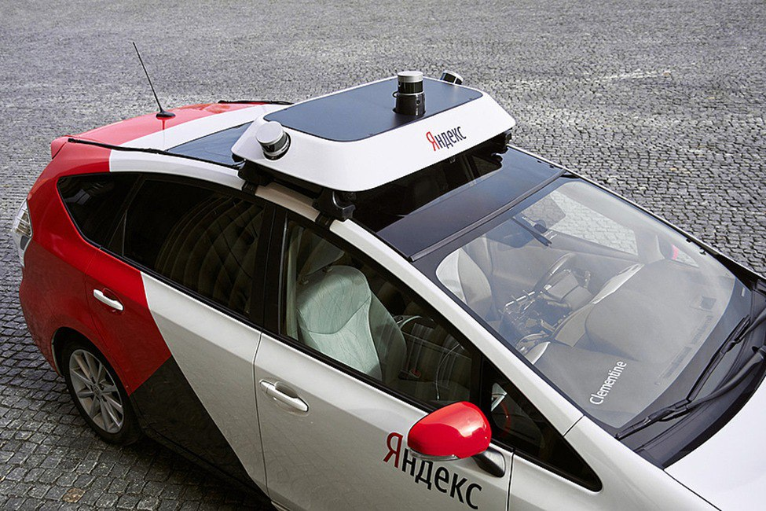

Собственный беспилотный автомобиль
Находясь за водительским сидением автомобильного беспилотного транспорта, вы можете делать всё что угодно, даже не касаясь руля и педалей: искусственная система управления сделает (aI) всё за вас. Тем не менее, сбои и аварии редки, но бывают, так что рекомендуем быть готовым в любой момент взять управление на себя.

максимальный комфорт в беспилотном автомобиле, управляемым искусственным интеллектом
Самая известная кампания по выпуску личных беспилотных автомобилей и автомобильного беспилотного транспорта — Tesla.
Довольно часто, беспилотный автомобиль (или автомобильный беспилотный транспорт) и электроавтомобиль (электрокар) — это одна и та же модель, поэтому вы можете также пользоваться социальными плюшками, как, например, избавление от налогов или бесплатная зарядная станция в центре города.

зарядная станция для водителей
Нужно ли развивать автомобильный беспилотный транспорт?
— да, скажу я вам. Как и во всём мире, обычно этим занимаются крупные кампании:
У нас он ещё не стал повсеместным и сильно заметно выделяющимся, но такие как Яндекс, КАМА3 и СберАвтоТех активно занимаются его созданием и продвижением.
Как пишет Yandex Self-Driving Group:
«Участвуйте в тестировании беспилотного такси в Москве Мы готовимся к запуску тестирования первого беспилотного такси в Москве и приглашаем принять в нём участие. Автомобили будут возить пассажиров в районе Ясенево на юге столицы, в окрестностях станций метро «Ясенево», «Новоясеневская» и «Битцевский парк». На первом этапе поездки на беспилотных такси будут доступны ограниченному количеству пользователей. Вы можете первыми попробовать наш сервис. Для этого мы просим вас заполнить заявку, и через некоторое время мы свяжемся с вами».
Для этого можно заполнить анкету для участия в тестировании на этом же сайте.
Для безопасности беспилотные автомобили — такси пока что курсируют в основном ночью. Они тестируются и вводятся в большом количестве стран: в России, Китае, США, южной Корее. Вполне возможно, они вскоре появятся и в Москве
Как вы можете заметить, сверху находится блок датчиков, отсутсвующий на обычных автомобилях.
Яндекс беспилотные автомобили

